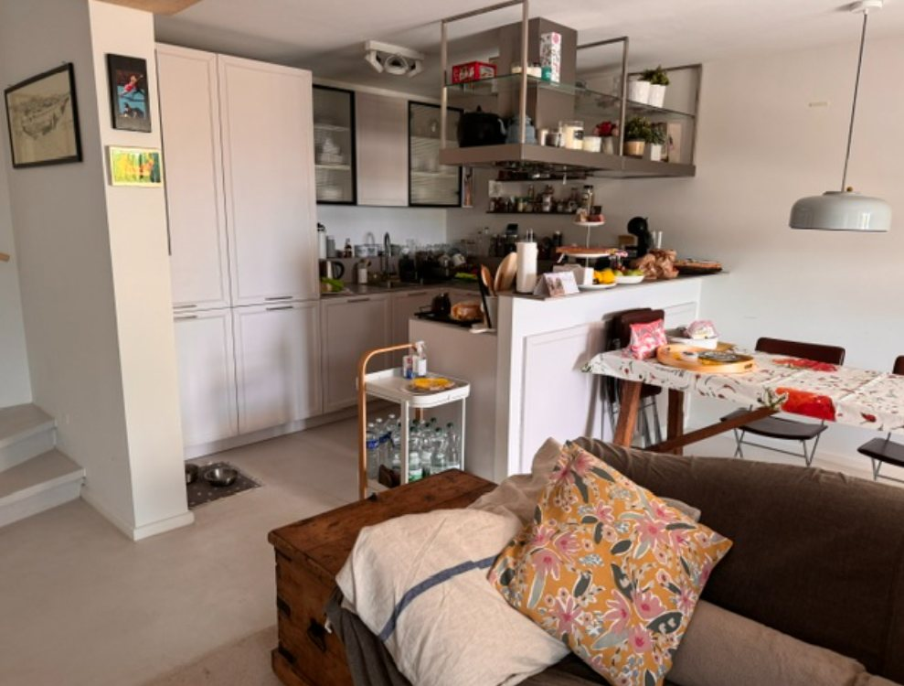
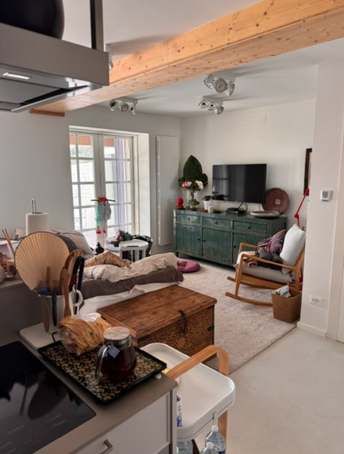
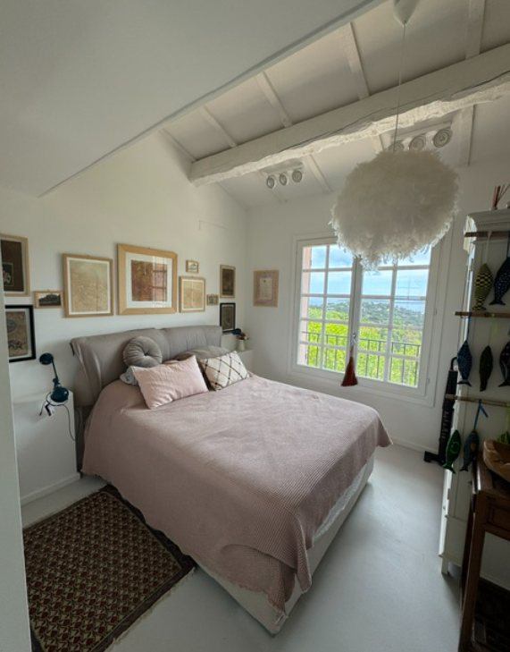
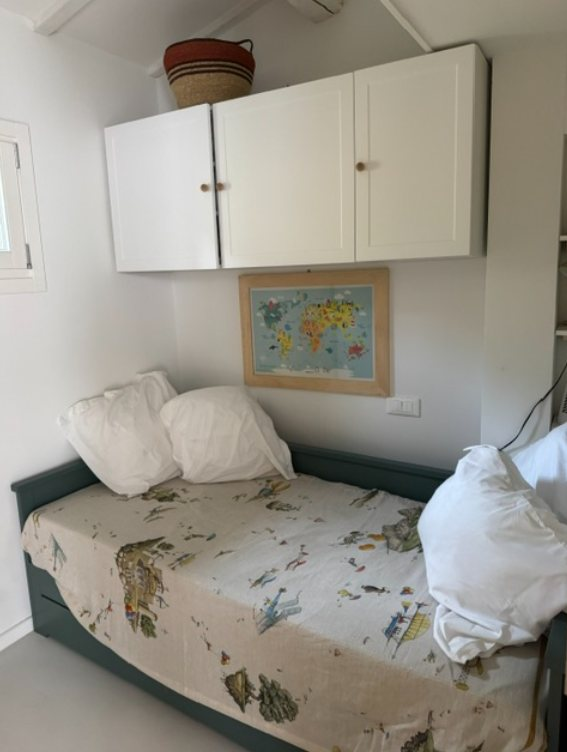
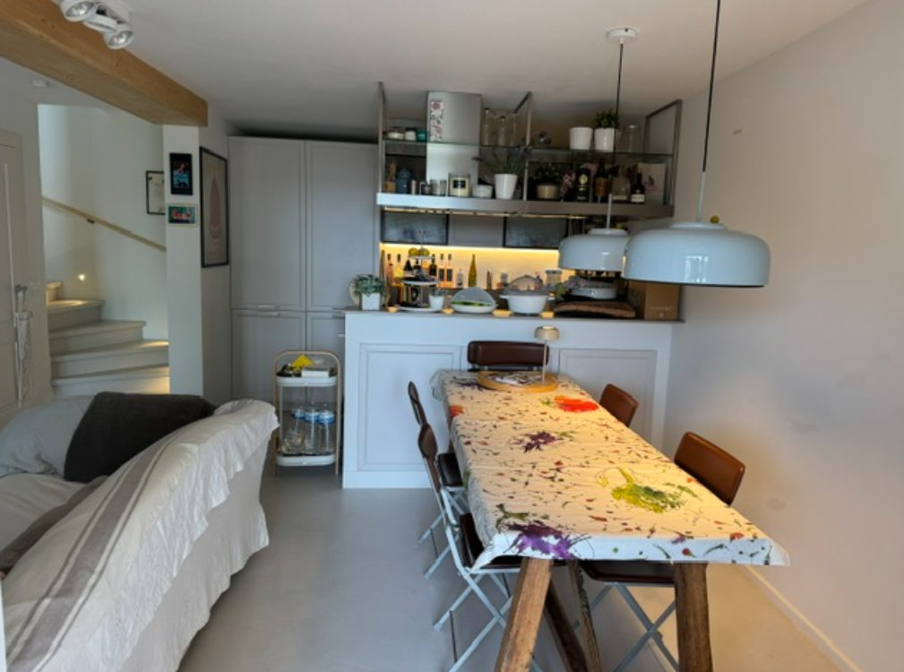

The House
Welcome to Mas 64, a warm and cosy 3-star classified holiday home in the secure Collines de Guerrevieille residential estate in Sainte-Maxime. Set in the first row of the estate, it enjoys stunning views over the Gulf of Saint-Tropez, surrounded by Provençal nature, just minutes from the beach, the town centre and Beauvallon golf course.

Cosy lounge, Smart TV and equipped kitchen

Bright, cosy living room
The house
54 m² – 2 bedrooms – 1 bathroom with a large shower, plus 2 WCs – sleeps up to 4.
The main bedroom, under exposed beams, has a double bed (140 x 200 cm) and a sea view as you wake up. The second bedroom, ideal for children, has a trundle bed that sleeps 2 children or 2 adults (160 x 200 cm when opened).
The living room has a Smart TV with unlimited internet for your own streaming subscriptions (Netflix, Prime Video…), a Bose Bluetooth speaker and a sofa bed.
The house has no air conditioning: mosquito screens on all windows and French doors let the breeze flow through, keeping it naturally cool and comfortable. Four Dyson-style fans are also provided.

Bedroom under the beams, sea view on waking

Bedroom with trundle bed, for 2 children or a couple
The kitchen
Open to the living area and fully equipped: induction hob, oven, microwave, toaster, dishwasher, separate fridge and freezer, Nespresso machine, Italian moka pot, French press, champagne flutes, and even an ice-cream maker for homemade treats. Two tables let you dine indoors or outdoors, as you prefer.

Practical
Private parking space right in front of the house. Washing machine and tumble dryer. Heating. Multi-purpose vacuum, wet-and-dry floor cleaner and handheld vacuum provided. Bed linen and towels available to rent on request.
Services on request
On request, we can put you in touch with local providers (transfers, vehicle rental, groceries, meals, activities, wellness…). Extra cost, subject to availability.